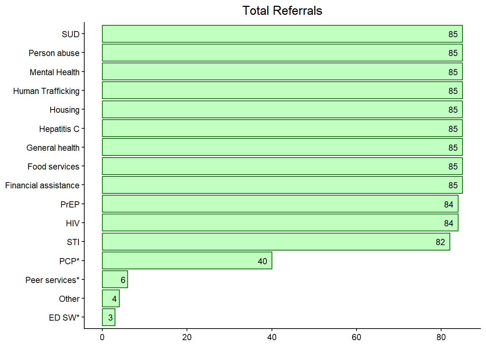

| Date | Encounters | No Service | % No Service | Assessments | % Assessed | CTR Tests | % CTR | EHE Tests | % EHE | HCV Tests | % HCV Tests | LTC Cases | % LTC Cases |
|---|---|---|---|---|---|---|---|---|---|---|---|---|---|
| 09/2025 | 2 | 2 | 100.0% | 0 | 0.0% | 0 | 0.0% | 0 | 0.0% | 0 | 0.0% | 0 | 0.0% |
| 10/2025 | 20 | 0 | 0.0% | 5 | 25.0% | 3 | 15.0% | 0 | 0.0% | 0 | 0.0% | 0 | 0.0% |
| Totals | 22 | 2 | 9.1% | 5 | 100.0% | 3 | 13.6% | 0 | 0.00% | 0 | 0.0% | 0 | 0.0% |
Maria Meira
This metrics report shows data for encounter information for Maria Meira. Maria’s start and end date with EIP are shown below, however, any data contained within this report covers clinical information captured in the EIP Database since January 1st, 2023. The metrics in this report describe specific encounter information and the services and/or referrals that were provided to patients/clients.
- Start date: 10/1/2025
- End date:
Until a unique patient identifier is created for patients seen by EIP, matching unique patients across multiple years of encounters is difficult. Therefore, patient demographic and population information will refer only to the number of encounters, not the unique number of patients. This part of the report is still in development.
Encounter Information
The remainder of this metrics report is all encounter-based information. Since some of our staff have responsibilities that may have them performing tasks that cross multiple roles within the program, all metrics are considered here when discussing encounter information. For example, linkage information is evaluated below even though not all staff perform linkage duties. This will keep the metric reports for all staff consistent, and allow for the transition into other roles at any time without an interruption in this reporting structure. Encounters are defined and stratified by EIP team member by the following information captured in the EIP Database:
Encounters: An encounter is any visit that is created within the patient record in the EIP Database, whether service information is provided or not. Every encounter should have some type of service entered (i.e. Assessment, HIV/HCV Testing, Linkage), but is still counted as an encounter if something is entered within the record (i.e. just Encounter Information or Encounter Checklist info).
Staff indication: There are background variables on each page in the EIP Database that captures the REDCap username of the individual completing the form. If you created any of the forms for that encounter within the EIP Database, or if your name is selected as the “EIP Counselor” on the Encounter Checklist page, then you are attached to that record in some capacity and noted in these numbers. If you work as a peer and your name is selected on the “Peer Support” form, that also indicates that encounter as one you were involved with in some way, and thus counted here. If you work as a linkage coordinator and selected as linkage staff working the case on the Linkage to Care form, then that encounter is also counted in these numbers.
Maria has had a total of 22 encounters entered into the EIP Database since January 1st, 2023. A summary table of these encounters and what they consisted of are shown below.
The graph below shows the total number of encounters Maria has had during each month within the reporting period. Also, the total number of each service provided are shown by the trend lines, which allows you to see trends over time. The definitions for how each of these numbers are stratified is described below the graph. This plot is dynamic, meaning you can select and deselect each particular metric by clicking the text in the legend on the right to focus on particular services provided. The plot also has the ability to zoom in on particular time frames by dragging the pointer to select the desired timeframe, and you can also scroll through timepoints using the slider below the x-axis. You can reset the graph by double-clicking within the plot. As mentioned above, not all staff offer or perform these services, so you can deselect the ones not within Maria’s role for a more tailored focus of tasks. This is a visual representation of the data shown in the complete summary metrics table above.
No Service: A No Service encounter is when only basic encounter information is entered into the record, such as encounter date and location, but no service approaches (assessment, testing, linkage) are documented.
Assessments: An Assessment is when at least one question located on the Risk Assessment form is answered during the encounter.
CTR Tests: A CTR test is a rapid-based HIV test collected via a fingerstick (or in extremely rare instances, an oral swab) that is not marked as an EHE test in the Reason for Offer Category on the HIV Testing form.
EHE Tests: An EHE test is a rapid-based HIV test collected via a fingerstick that is marked as an EHE test in the Reason for Offer Category on the HIV Testing form.
HCV Tests: A rapid-based HCV tested is counted when the sample type for the HCV test documented on the Testing - HCV form is a fingerstick test. Therefore, lab-based tests are not counted here.
LTC Cases: A Linkage to Care case is considered opened when one of the linkage services are selected on the start of the Linkage to Care form in the database. The number counted here are the total number of cases initiated during the encounter, not necessarily those open at that time (for example, a case still open from a prior month).
The table shown below shows the average monthly numbers for encounters and each type of service noted above. This is the average number of encounters/services based on the time frame shown in the graph above, which is when Maria started documenting encounters/services with EIP.
| Monthly Average | |
|---|---|
| Encounters | 11.0 |
| Assessments | 2.5 |
| CTR Tests | 1.5 |
| EHE Tests | 0.0 |
| HCV Tests | 0.0 |
| LTC Cases | 0.0 |
Assessments
Assessment data contains a lot of important information regarding patient risk and needs, and help determine whether or not the appropriate information and referrals are being provided during the encounter. The assessment data is analyzed in this section and broken down by specific questions to determine when certain screening tools are utilized to determine patient needs. The assessment contains data regarding substance use disorder (SUD), mental health (MH), and pre-exposure prophylaxis (PrEP), all examined below. Maria has conducted a total of 5 assessments, which means that 100.0% of Maria’s encounters consisted of an assessment (5/22).
A summary of the general monthly trends of screening for each of these conditions is shown in the plot below. The description of the screening tools, as well as the number of screens and positivity per month are discussed within this section as well.
Substance Use Disorder (SUD)
SUD disorder measures include the Alcohol Use Disorders Identification Test (AUDIT-C) for alcohol abuse as well as the National Institute on Drug Abuse (NIDA) Modified Alcohol, Smoking, and Substance Involvement Screening Test (ASSIST), or the NM-ASSIST for all forms of substance abuse disorder. If any of the questions within this scale are answered by the patient during the encounter, then they are considered screened for SUD. There are scores associated with these measures, and those are calculated within the EIP Database in the background as data is entered. If the individual meets criteria on either the AUDIT-C or the NM-ASSIST, then they are considered positive for a SUD. The total number of assessments completed by Maria during this reporting period is 5, with 5 assessments having been screened for a SUD (100.0%, 5/5). For all assessments where the individual was screened for a SUD, there were a total of 0 that were positive for SUD (0.0%, 0/5).
| Date | Assessments | SUD Assessed | % SUD Assessed | SUD + | % SUD + |
|---|---|---|---|---|---|
| 09/2025 | 0 | 0 | 0.0% | 0 | 0.0% |
| 10/2025 | 5 | 5 | 100.0% | 0 | 0.0% |
| Totals | 5 | 5 | 100.0% | 0 | 0.0% |
Mental Health (MH)
MH measures within the EIP assessment include the Patient Health Questionnaire (PHQ) for depression, the Generalized Anxiety Disorder (GAD) scale for anxiety, and the Post-Traumatic Stress Disorder CheckList (PCL) for Civilians (PCL-C) for PTSD. If any of the questions within these scales are answered by the patient during the encounter, then they are considered screened for MH. There are scores associated with these measures, and those are calculated within the EIP Database in the background as data is entered. If the individual meets criteria on any of these scales for these MH conditions, then they are considered positive for a MH condition. However, it is important to note: prior to January 2024, we only conducted the full MH measures for those that were also positive for a SUD, not all those assessed. Prior to 2024, we conducted shortened versions of the PHQ (PHQ2) and the GAD (GAD2) for all those assessed, but we had only asked the full versions and the PCL-C scale when they were determined positive for any SUD. The total number of assessments where at least one of the questions were asked on these condensed scales was 3 (60.0%, 3/5). The total number of assessments where the patient screened positive for a SUD and completed at least one of the questions on these MH measures was 3 (60.0%, 3/0). Remember, the denominator used here is the number of assessments where the individual was SUD positive (n = 0), not all assessments (n = 5), since the full MH assessments were only available to those who had a SUD prior to 2024.
For all assessments where the individual was positive for a SUD and screened for MH, there were a total of 0 that were positive for at least one of the MH conditions screened for on the EIP assessment (0.0%, 0/3). In regards to the specific conditions that were assessed, those are provided below the table.
| Date | Assessments | Brief MH Assessed | % Brief MH Assessed | SUD + | MH Assessed | % MH Assessed | MH + | % MH + |
|---|---|---|---|---|---|---|---|---|
| 09/2025 | 0 | 0 | 0.0% | 0 | 0 | 0.0% | 0 | 0.0% |
| 10/2025 | 5 | 3 | 60.0% | 0 | 3 | Inf | 0 | 0.0% |
| Totals | 5 | 3 | 60.0% | 0 | 3 | 60.0% | 0 | 0.0% |
Depression: total of 3 assessed (100.0% of all those assessed for MH, 3/3), with 0 positive (0.0% of all those screened for depression, 0/3).
Anxiety: total of 3 assessed (100.0% of all those assessed for MH, 3/3), with 0 positive (0.0% of all those screened for anxiety, 0/3).
PTSD: total of 0 assessed (0.0% of all those assessed for MH, 0/3), with 0 positive (NA of all those screened for PTSD, 0/0).
| Date | MH Assessed | Depression Assessed | % Depression Assessed | Depression positive | % Depression positive | Anxiety Assessed | % Anxiety Assessed | Anxiety positive | % Anxiety positive | PTSD Assessed | % PTSD Assessed | PTSD positive | % PTSD positive |
|---|---|---|---|---|---|---|---|---|---|---|---|---|---|
| 09/2025 | 0 | 0 | 0.0% | 0 | 0.0% | 0 | 0.0% | 0 | 0.0% | 0 | 0.0% | 0 | 0.0% |
| 10/2025 | 3 | 3 | 100.0% | 0 | 0.0% | 3 | 100.0% | 0 | 0.0% | 0 | 0.0% | 0 | 0.0% |
| Totals | 3 | 3 | 100.0% | 0 | 0.0% | 3 | 100.0% | 0 | 0.0% | 0 | 0.0% | 0 | NA |
Pre-Exposure Prophylaxis (PrEP)
PrEP eligibility is covered by several different questions scattered within the assessment that determine whether an individual may be at risk for contracting HIV and could benefit from a PrEP assessment. The total number of assessments Maria conducted where the individual answered at least one of the questions regarding their risk of contracting HIV, and therefore their potential need for PrEP, was 5 assessments (100.0% of all those assessed, 5/5). The total number of assessments where the individual was considered at risk and therefore eligible for PrEP was 4 assessments (80.0% of all those assessed for their HIV risk, 4/5). Once an individual is determined to be eligible for PrEP based on their risks for contracting HIV, our staff is then instructed to discuss the individual’s knowledge of PrEP and several other factors, providing education and a referral for PrEP initiation and linkage to a provider. The PrEP assessment is defined as being conducted as long as at least one of the questions within this individualized assessment is answered. The total number of assessments where the individual was eligible for PrEP based on their risks and received this PrEP assessment was 0 assessments (0.0% of all those eligible for PrEP, 0/4).
| Date | Assessed | Risk Assessed | % At Risk | PrEP Eligible | % Eligible | PrEP Assessed | % Assessed |
|---|---|---|---|---|---|---|---|
| 09/2025 | 0 | 0 | 0.0% | 0 | 0.0% | 0 | 0.0% |
| 10/2025 | 5 | 5 | 100.0% | 4 | 80.0% | 0 | 0.0% |
| Totals | 5 | 5 | 100.0% | 4 | 80.0% | 0 | 0.0% |
An individual is considered at risk for contracting HIV and eligible for PrEP based on whether they meet at least one of the criteria listed below. However, according to the Ohio Department of Health (ODH), anyone who is negative for HIV is considered eligible for PrEP.
Exchange of money/drugs for sex within their lifetime
More than 3 sexual partners within the past year
Shared works (IDU) within their lifetime
Diagnosed with a sexually transmitted infection (STI) within the past year
Identifies as a MSM and endorsed unprotected anal sex, a diagnosis of syphilis/gonorrhea, or sex with a PLWHA within the past year
Identifies as a heterosexual female and endorsed unprotected vaginal/anal sex within the past year with a partner who is either a MSM, an IDU, or a PLWHA
HIV Testing
The total number of HIV tests, including both CTR and EHE tests, are shown in the plot below. These only include rapid-based HIV tests that are performed by Maria, and does not include any lab tests that are initiated by medical staff prompted by EIP, or lab draws performed in the community (unless it is the result of an initial rapid test). The plot has the ability to select only CTR/EHE tests, and has the ability to zoom in on particular time frames by clicking and dragging. You can reset the graph by double-clicking within the plot.
Out of the total number of HIV tests that Maria has conducted (n = 3), there have been 0 positive tests (0.00% of all HIV tests, 0/3). There have been a total of 0 positive CTR tests (0.00% of all CTR tests, 0/3) and a total of 0 positive EHE tests (0.0% of all EHE tests, 0/0).
For the individuals positively identified through testing, Maria has identified a total of 0 new positive individuals (0.0% of all positive HIV tests, 0/0). This number is comprised of 0 new positives from CTR testing (0.0% percent of all CTR positive tests, 0/0) and 0 new positives from EHE testing (0.0% percent of all EHE positive tests, 0/0). Therefore, the overall positivity rate for Maria’s HIV testing is 0.00% (0/3), and for each program specifically is as follows: 0.00% for CTR (0/3) and 0.0% for EHE (0/0).
| Total | CTR | EHE | |
|---|---|---|---|
| Number of Tests | 3 | 3 | 0 |
| Positives | 0 | 0 | 0 |
| New Positives | 0 | 0 | 0 |
| Positivity Rate | 0.00% | 0.00% | 0.0% |
Additionally, false positive tests occur when the individual has an initial reactive/positive test, but additional testing shows that their final status is actually a negative result. Maria has had a total of 0 tests that have resulted in a false positive (0.0% of all HIV tests, 0/3), or those that had an initial reactive result but a final negative status.
There are also instances when the initial test may be reactive, but the confirmatory test is negative, leading to a discordant result that requires additional testing (HIV RNA testing). Until that RNA testing is completed, this is known as an Indeterminate result. Maria currently has a total of 0 tests that are indeterminate and in need of RNA testing (0.0% of all HIV tests, 0/3). This is counted when the final test status is noted as Indeterminate. When the RNA testing confirms the final result, the final status is updated. Therefore, this only counts those that are currently marked as Indeterminate and have not had the follow-up RNA testing necessary to know the individual’s final HIV status.
Hepatitis C Testing
The total number of Hepatitis C rapid tests conducted by Maria per month are shown in the plot below. This only considers the rapid tests initiated by our staff, not lab-initiated tests or blood draws (unless it is the result of an initial rapid test). The plot has the ability to zoom in on particular time frames by clicking and dragging. You can reset the graph by double-clicking within the plot.
Out of the total number of rapid HCV tests conducted by Maria (n = 0), there were a total of 0 reactive/positive HCV results (0.0% of all rapid HCV tests, 0/0). The total number of newly-identified positives from these tests was 0 new HCV positive individuals (0.0% of all HCV positive HCV tests, 0/0). Therefore, the overall positivity rate for Maria’s Hepatitis C testing is 0.0% (0/0).
| Total | |
|---|---|
| Number of Tests | 0 |
| Positives | 0 |
| New Positives | 0 |
| Positivity Rate | 0.0% |
Referrals
Referral information can be provided to patients/clients regardless of what occurs during their encounter, and regardless of whether or not they received any EIP services during their encounter. They may be provided based on brief conversations with our staff or from information gathered from medical staff that may not have been documented within the EIP database. Referrals are also documented in multiple places within the EIP database, those provided during the encounter and those provided during any linkage follow-up. Even if referrals are provided during the linkage process, they are represented here as any information gathered during the encounter could have led to that referral being provided. The referrals will be noted separately, but also as a combined total, and the referrals provided specifically during the linkage process will be repeated in the linkage to care section.
| Encounter referral | Linkage referral | |
|---|---|---|
| HIV | 16 | 0 |
| Hepatitis C | 16 | 0 |
| SUD | 16 | 0 |
| Human Trafficking | 16 | 0 |
| Mental Health | 16 | 0 |
| Housing | 16 | 0 |
| PrEP | 16 | 0 |
| STI | 16 | 0 |
| Food services | 16 | 0 |
| Financial assistance | 16 | 0 |
| Person abuse | 16 | 0 |
| General health | 16 | 0 |
| PCP* | 6 | |
| ED SW* | 0 | |
| Peer services* | 4 | |
| Other | 0 | 0 |
| Totals | 202 | 0 |
| * No linkage referral documentation |
Referrals are documented in the EIP database in three different ways at the encounter level: (1) provided information, such as brochures/pamphlets or referral lists with community programs, (2) provided internal referral for that service to one of EIP’s linkage coordinators, or (3) an external referral to a specific agency. Regardless of the nature of the referral, they way a referral is defined here is as long as one of those options are covered for that service.
There are a few referrals that are only documented at the encounter level, and do not have any component for documentation on the linkage referral list. Those referral types are indicated within the table to the left as well as the figure below, and listed here: primary care (PCP), ED social work (SW), and Peer services.
The table to the left highlights the total number of referrals provided during the initial encounter as well as the total number of referrals provided during the linkage follow-up. These referrals do not necessarily mean that Maria is the one who made the referral, since referrals can be made at any point during the encounter/linkage process and by anyone involved. For example, one staff member may be responsible for one portion of the encounter/linkage, and provided referrals, whereas another staff member may be responsible for another part of the encounter/linkage and provided the referral.
The figure below shows the total number of referrals that were provided by each service. This includes any referrals provided during either the initial encounter or the linkage follow-up. The figure is sorted by most total referrals provided to the least. A service referral is only counted once here as long as it was made during either the encounter or linkage process. For example, if an HIV referral was made bother during the encounter and linkage process, it is only counted once for that encounter.

Linkage to Care
Linkage to care (LTC) cases can be initiated for any number of reasons, including (but not limited to) self-report of need from the individual, identification of need based on EIP assessment and/or testing information, referral from medical staff outside of EIP, community referrals, or identification and/or referrals based on screening and testing through typical ED/hospital care. Some of our linkage staff are more specialized in specific types of LTC services, while some are cross-trained and can work multiple LTC services. Therefore, this section will cover all aspects of EIP LTC services, so if Maria does not cover some aspects of linkage, that area will still be represented here but will not show any data, or limited data based on the overall encounter and linkage information maintained within the record. This section will first go over the summary of cases worked by Maria, and general numbers of each linkage service and outcome, then will go into greater examination of each type of LTC service.
The total number of LTC cases that Maria has been involved with is 0 LTC cases. Our linkage staff is trained to open a linkage case any time need is identified, and then we are able to know the outcome of the case based on their documention within that LTC case. This way, we are able to understand the full scope of need for those we encounter, and determine what happens as we try to engage the patient after their ED visit. We use the term “eligible” cases for those that our linkage team are realistically able to follow-up with and at least have some ability to engage with the individual after leaving the ED. Cases that are designated as “ineligible” include the following situations: the patient is already linked to care, they are deceased, they are incarcerated, they decline linkage services, or there is no contact information for which to follow-up. Also, ongoing linkage cases mean that the individual already has a current linkage case open, so rather than working multiple cases or counting the linkage case twice, we exclude these situations due to ongoing linkage already in process. The total number of Maria’s cases that were “eligible” were 0 eligible LTC cases (0.0% of all LTC cases, 0/0). Maria currently has an open case load of 0 open cases (0.0% of all eligible LTC cases, 0/0), with 0 open LTC cases being open longer than 90 days (0.0% of all open LTC cases, 0/0). Therefore, Maria has successfully closed 0 LTC cases (0.0% of all eligible LTC cases, 0/0), with a total of 0 cases successfully linked to care for their particular service (0.0% of all closed LTC cases, 0/0). A summary table of these total LTC numbers are shown below. For each particular type of LTC service, you can review each tab below the table.
| Total | % | |
|---|---|---|
| Total Cases | 0 | |
| Eligible Cases | 0 | 0.0% |
| Open Cases | 0 | 0.0% |
| Open >90 days | 0 | 0.0% |
| Closed Cases | 0 | 0.0% |
| Linked | 0 | 0.0% |
HIV linkage cases are further stratified by those that are cases worked for individuals newly diagnosed versus those that were diagnosed previously. The HIV Linkage Flow Diagram is provided here for Maria’s HIV linkage cases.
Maria has worked on a total of 0 HIV linkage cases (0.0% of all linkage cases, 0/0). Out of all HIV linkage cases, there were a total of 0 for those newly diagnosed with HIV (0.0% of all HIV linkage cases, 0/0), and a total of 0 for those that have been previously diagnosed (0.0% of all HIV linkage cases, 0/0).
A total of 0 of these cases are “eligible” to be linked to care (0.0% of all HIV linkage cases, 0/0), and the reasons the remaining 0 were “ineligible” are noted in the flow diagram.
Out of those “eligible” to be linked, 0 were for those newly diagnosed for HIV (0.0% of all “eligible” HIV linkage cases, 0/0), and 0 were for those previously diagnosed (0.0% of all “eligible” HIV linkage cases, 0/0). Maria is currently working on 0 of these HIV linkage cases (0.0% of which have been open for more than 90 days), and therefore has closed a total of 0 thus far (0.0% of all “eligible” HIV linkage cases, 0/0). Out of those cases closed, a total of 0 were unable to be linked to care (0.0% of all closed HIV linkage cases, 0/0), with the reasons as to why are shown in the flow diagram. These reasons are not mutually exclusive, and there could be multiple reasons why those linkage cases were unsuccessful.

Therefore, Maria has successfully linked a total of 0 HIV linkage cases (0.0% of all closed HIV linkage cases, 0/0). Out of all those cases that were successfully linked to care, 0 were for those newly diagnosed with HIV (0.0% of all “eligible” HIV linkage cases for newly diagnosed individuals, 0/0), and 0 were for those that were previously diagnosed (0.0% of all “eligible” HIV linkage cases for previously diagnosed individuals, 0/0).
Hepatitis C linkage cases are further stratified by those that are cases worked for individuals newly diagnosed versus those that were diagnosed previously. The HCV Linkage Flow Diagram is provided here for Maria’s HCV linkage cases.
Maria has worked on a total of 0 HCV linkage cases (0.0% of all linkage cases, 0/0). Out of all HCV linkage cases, there were a total of 0 for those newly diagnosed with HCV (0.0% of all HCV linkage cases, 0/0), and a total of 0 for those that have been previously diagnosed (0.0% of all HCV linkage cases, 0/0).
A total of 0 of these cases are “eligible” to be linked to care (0.0% of all HCV linkage cases, 0/0), and the reasons the remaining 0 were “ineligible” are noted in the flow diagram.
Out of those “eligible” to be linked, 0 were for those newly diagnosed for HCV (0.0% of all “eligible” HCV linkage cases, 0/0), and 0 were for those previously diagnosed (0.0% of all “eligible” HCV linkage cases, 0/0). Maria is currently working on 0 of these HCV linkage cases (0.0% of which have been open for more than 90 days), and therefore has closed a total of 0 thus far (0.0% of all “eligible” HCV linkage cases, 0/0). Out of those cases closed, a total of 0 were unable to be linked to care (0.0% of all closed HCV linkage cases, 0/0), with the reasons as to why are shown in the flow diagram. These reasons are not mutually exclusive, and there could be multiple reasons why those linkage cases were unsuccessful.

Therefore, Maria has successfully linked a total of 0 HCV linkage cases (0.0% of all closed HCV linkage cases, 0/0). Out of all those cases that were successfully linked to care, 0 were for those newly diagnosed with HCV (0.0% of all “eligible” HCV linkage cases for newly diagnosed individuals, 0/0), and 0 were for those that were previously diagnosed (0.0% of all “eligible” HCV linkage cases for previously diagnosed individuals, 0/0).
The SUD Linkage Flow Diagram is provided here for Maria’s SUD linkage cases.
Maria has worked on a total of 0 SUD linkage cases (0.0% of all linkage cases, 0/0).
A total of 0 of these cases are “eligible” to be linked to care (0.0% of all SUD linkage cases, 0/0), and the reasons the remaining 0 were “ineligible” are noted in the flow diagram.
Maria is currently working on 0 of these SUD linkage cases (0.0% of which have been open for more than 90 days), and therefore has closed a total of 0 thus far (0.0% of all “eligible” SUD linkage cases, 0/0). Out of those cases closed, a total of 0 were unable to be linked to care (0.0% of all closed SUD linkage cases, 0/0), with the reasons as to why are shown in the flow diagram. These reasons are not mutually exclusive, and there could be multiple reasons why those linkage cases were unsuccessful.

Therefore, Maria has successfully linked a total of 0 SUD linkage cases (0.0% of all closed SUD linkage cases, 0/0).
The Human Trafficking (HT) Linkage Flow Diagram is provided here for Maria’s HT linkage cases.
Maria has worked on a total of 0 HT linkage cases (0.0% of all linkage cases, 0/0).
A total of 0 of these cases are “eligible” to be linked to care (0.0% of all HT linkage cases, 0/0), and the reasons the remaining 0 were “ineligible” are noted in the flow diagram.
Maria is currently working on 0 of these HT linkage cases (0.0% of which have been open for more than 90 days), and therefore has closed a total of 0 thus far (0.0% of all “eligible” HT linkage cases, 0/0). Out of those cases closed, a total of 0 were unable to be linked to care (0.0% of all closed HT linkage cases, 0/0), with the reasons as to why are shown in the flow diagram. These reasons are not mutually exclusive, and there could be multiple reasons why those linkage cases were unsuccessful.

Therefore, Maria has successfully linked a total of 0 HT linkage cases (0.0% of all closed HT linkage cases, 0/0).
The Mental Health (MH) Linkage Flow Diagram is provided here for Maria’s MH linkage cases.
Maria has worked on a total of 0 MH linkage cases (0.0% of all linkage cases, 0/0).
A total of 0 of these cases are “eligible” to be linked to care (0.0% of all MH linkage cases, 0/0), and the reasons the remaining 0 were “ineligible” are noted in the flow diagram.
Maria is currently working on 0 of these MH linkage cases (0.0% of which have been open for more than 90 days), and therefore has closed a total of 0 thus far (0.0% of all “eligible” MH linkage cases, 0/0). Out of those cases closed, a total of 0 were unable to be linked to care (0.0% of all closed MH linkage cases, 0/0), with the reasons as to why are shown in the flow diagram. These reasons are not mutually exclusive, and there could be multiple reasons why those linkage cases were unsuccessful.

Therefore, Maria has successfully linked a total of 0 MH linkage cases (0.0% of all closed MH linkage cases, 0/0).
The Housing Linkage Flow Diagram is provided here for Maria’s Housing linkage cases.
Maria has worked on a total of 0 Housing linkage cases (0.0% of all linkage cases, 0/0).
A total of 0 of these cases are “eligible” to be linked to care (0.0% of all Housing linkage cases, 0/0), and the reasons the remaining 0 were “ineligible” are noted in the flow diagram.
Maria is currently working on 0 of these Housing linkage cases (0.0% of which have been open for more than 90 days), and therefore has closed a total of 0 thus far (0.0% of all “eligible” Housing linkage cases, 0/0). Out of those cases closed, a total of 0 were unable to be linked to care (0.0% of all closed Housing linkage cases, 0/0), with the reasons as to why are shown in the flow diagram. These reasons are not mutually exclusive, and there could be multiple reasons why those linkage cases were unsuccessful.

Therefore, Maria has successfully linked a total of 0 Housing linkage cases (0.0% of all closed Housing linkage cases, 0/0).
The PrEP Linkage Flow Diagram is provided here for Maria’s PrEP linkage cases.
Maria has worked on a total of 0 PrEP linkage cases (0.0% of all linkage cases, 0/0).
A total of 0 of these cases are “eligible” to be linked to care (0.0% of all PrEP linkage cases, 0/0), and the reasons the remaining 0 were “ineligible” are noted in the flow diagram.
Maria is currently working on 0 of these PrEP linkage cases (0.0% of which have been open for more than 90 days), and therefore has closed a total of 0 thus far (0.0% of all “eligible” PrEP linkage cases, 0/0). Out of those cases closed, a total of 0 were unable to be linked to care (0.0% of all closed PrEP linkage cases, 0/0), with the reasons as to why are shown in the flow diagram. These reasons are not mutually exclusive, and there could be multiple reasons why those linkage cases were unsuccessful.

Therefore, Maria has successfully linked a total of 0 PrEP linkage cases (0.0% of all closed PrEP linkage cases, 0/0).
The STI Linkage Flow Diagram is provided here for Maria’s STI linkage cases.
Maria has worked on a total of 0 STI linkage cases (0.0% of all linkage cases, 0/0).
A total of 0 of these cases are “eligible” to be linked to care (0.0% of all STI linkage cases, 0/0), and the reasons the remaining 0 were “ineligible” are noted in the flow diagram.
Maria is currently working on 0 of these STI linkage cases (0.0% of which have been open for more than 90 days), and therefore has closed a total of 0 thus far (0.0% of all “eligible” STI linkage cases, 0/0). Out of those cases closed, a total of 0 were unable to be linked to care (0.0% of all closed STI linkage cases, 0/0), with the reasons as to why are shown in the flow diagram. These reasons are not mutually exclusive, and there could be multiple reasons why those linkage cases were unsuccessful.

Therefore, Maria has successfully linked a total of 0 STI linkage cases (0.0% of all closed STI linkage cases, 0/0).
The Food services Linkage Flow Diagram is provided here for Maria’s Food services linkage cases.
Maria has worked on a total of 0 Food services linkage cases (0.0% of all linkage cases, 0/0).
A total of 0 of these cases are “eligible” to be linked to care (0.0% of all Food services linkage cases, 0/0), and the reasons the remaining 0 were “ineligible” are noted in the flow diagram.
Maria is currently working on 0 of these Food services linkage cases (0.0% of which have been open for more than 90 days), and therefore has closed a total of 0 thus far (0.0% of all “eligible” Food services linkage cases, 0/0). Out of those cases closed, a total of 0 were unable to be linked to care (0.0% of all closed Food services linkage cases, 0/0), with the reasons as to why are shown in the flow diagram. These reasons are not mutually exclusive, and there could be multiple reasons why those linkage cases were unsuccessful.

Therefore, Maria has successfully linked a total of 0 Food services linkage cases (0.0% of all closed Food services linkage cases, 0/0).
The Financial assistance Linkage Flow Diagram is provided here for Maria’s Financial assistance linkage cases.
Maria has worked on a total of 0 Financial assistance linkage cases (0.0% of all linkage cases, 0/0).
A total of 0 of these cases are “eligible” to be linked to care (0.0% of all Financial assistance linkage cases, 0/0), and the reasons the remaining 0 were “ineligible” are noted in the flow diagram.
Maria is currently working on 0 of these Financial assistance linkage cases (0.0% of which have been open for more than 90 days), and therefore has closed a total of 0 thus far (0.0% of all “eligible” Financial assistance linkage cases, 0/0). Out of those cases closed, a total of 0 were unable to be linked to care (0.0% of all closed Financial assistance linkage cases, 0/0), with the reasons as to why are shown in the flow diagram. These reasons are not mutually exclusive, and there could be multiple reasons why those linkage cases were unsuccessful.

Therefore, Maria has successfully linked a total of 0 Financial assistance linkage cases (0.0% of all closed Financial assistance linkage cases, 0/0).
The Person abuse Linkage Flow Diagram is provided here for Maria’s Person abuse linkage cases.
Maria has worked on a total of 0 Person abuse linkage cases (0.0% of all linkage cases, 0/0).
A total of 0 of these cases are “eligible” to be linked to care (0.0% of all Person abuse linkage cases, 0/0), and the reasons the remaining 0 were “ineligible” are noted in the flow diagram.
Maria is currently working on 0 of these Person abuse linkage cases (0.0% of which have been open for more than 90 days), and therefore has closed a total of 0 thus far (0.0% of all “eligible” Person abuse linkage cases, 0/0). Out of those cases closed, a total of 0 were unable to be linked to care (0.0% of all closed Person abuse linkage cases, 0/0), with the reasons as to why are shown in the flow diagram. These reasons are not mutually exclusive, and there could be multiple reasons why those linkage cases were unsuccessful.

Therefore, Maria has successfully linked a total of 0 Person abuse linkage cases (0.0% of all closed Person abuse linkage cases, 0/0).
The General health Linkage Flow Diagram is provided here for Maria’s General health linkage cases.
Maria has worked on a total of 0 General health linkage cases (0.0% of all linkage cases, 0/0).
A total of 0 of these cases are “eligible” to be linked to care (0.0% of all General health linkage cases, 0/0), and the reasons the remaining 0 were “ineligible” are noted in the flow diagram.
Maria is currently working on 0 of these General health linkage cases (0.0% of which have been open for more than 90 days), and therefore has closed a total of 0 thus far (0.0% of all “eligible” General health linkage cases, 0/0). Out of those cases closed, a total of 0 were unable to be linked to care (0.0% of all closed General health linkage cases, 0/0), with the reasons as to why are shown in the flow diagram. These reasons are not mutually exclusive, and there could be multiple reasons why those linkage cases were unsuccessful.

Therefore, Maria has successfully linked a total of 0 General health linkage cases (0.0% of all closed General health linkage cases, 0/0).
The Other Linkage Flow Diagram is provided here for Maria’s Other linkage cases.
Maria has worked on a total of 0 Other linkage cases (0.0% of all linkage cases, 0/0).
A total of 0 of these cases are “eligible” to be linked to care (0.0% of all Other linkage cases, 0/0), and the reasons the remaining 0 were “ineligible” are noted in the flow diagram.
Maria is currently working on 0 of these Other linkage cases (0.0% of which have been open for more than 90 days), and therefore has closed a total of 0 thus far (0.0% of all “eligible” Other linkage cases, 0/0). Out of those cases closed, a total of 0 were unable to be linked to care (0.0% of all closed Other linkage cases, 0/0), with the reasons as to why are shown in the flow diagram. These reasons are not mutually exclusive, and there could be multiple reasons why those linkage cases were unsuccessful.

Therefore, Maria has successfully linked a total of 0 Other linkage cases (0.0% of all closed Other linkage cases, 0/0).